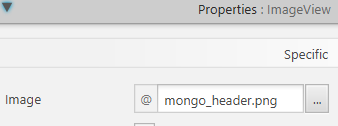
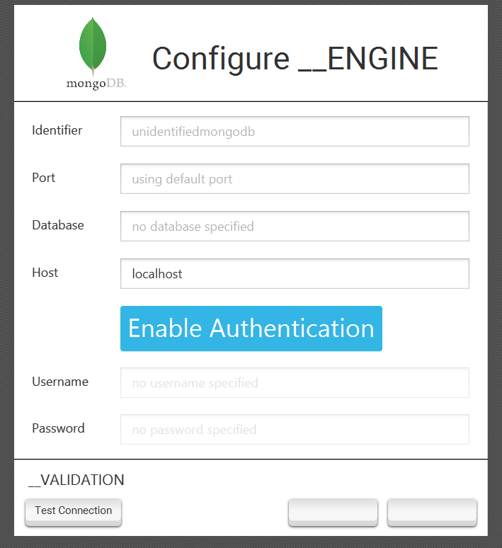
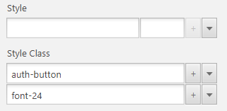
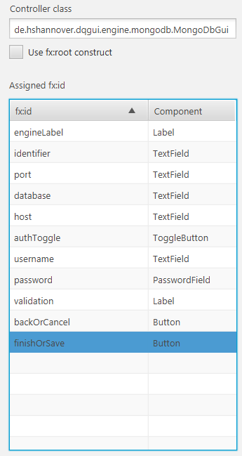

Engine Tutorial: Mongo
- Preconditions
- Workload
- Integrating with Build Script
- Setting up resources
- Extending DatabaseFetcher
- Extending DatabaseEngine
- Implementing the GUI Support
- Result
It is required that the article on the Database Abstraction Layer has been read thoroughly in order to be able to follow this tutorial.
This tutorial will show how MongoDB support is implemented via the Database Abstraction Layer.
Preconditions
- MongoDB is not relational
- MongoDBs official driver is used, it provides no JDBC support
- We don’t want to offer repository support, only IQM4HD support
Workload
- No Fetcher exists, thus we need to implement our own.
- We will use the ofCustom() GuiConfiguration and supply our own GUI.
- No database test exist so we will have to create our own.
Integrating with Build Script
We start by unzipping the sub-project skeleton, registering it with the build script and changing all placeholder identifiers to mongo and adding the MongoDB driver to our sub-project.
// https://mvnrepository.com/artifact/org.mongodb/mongo-java-driver
implementation group: 'org.mongodb', name: 'mongo-java-driver', version: '3.12.2'
Setting up resources
We copy the FXML, css and fonts folder from the database support zip GUI folder into engine/mongo resource folder.
We also search the internet for icons that shall be displayed in the wizard and menu and place them in the engine/mongo folder as well with the following names:
- wizard icon: mongo_header.png
- list icon: MONGO.png
Our resource folder looks like this now:
.
├── main
│ └── resources
│ └── engine
│ └── mongo
│ ├── MONGO.fxml
│ ├── MONGO.png
│ ├── fonts
│ │ └── roboto
│ │ ├── LICENSE.txt
│ │ └── Roboto-Regular.ttf
│ ├── mongo_header.png
│ └── style.css
Extending DatabaseFetcher
We implement our own fetcher by extending DatabaseFetcher.
The actual fetch implementation is copied from the iqm4hd-single implementation and it returns the already implemented DocumentSetIterator that resides in the iqm4hd-single client package.
A fetchers job is to establish a connection, execute queries that return a DatabaseEntryIterator and provide a way to close a connection so no resource leaks can occur.
public final class MongoDbFetcher extends DatabaseFetcher {
private MongoClient client;
public MongoDbFetcher(DatabaseConnection connection) {
super(connection);
}
@Override
public void initiate() {
String host = connectionData.getSocket().getFormat() == HostFormat.IPv6
? String.format("[%s]", connectionData.getSocket().getHost())
: connectionData.getSocket().getHost();
if(connectionData.getCredential().getUsername() == null
&& connectionData.getCredential().getPassword() == null) {
client = new MongoClient(new ServerAddress(host, connectionData.getSocket().getPort()),
MongoClientOptions.builder().serverSelectionTimeout(10000).build());
} else {
MongoCredential credential = MongoCredential.createCredential(
connectionData.getCredential().getUsername(),
connectionData.getCredential().getDatabase(),
connectionData.getCredential().getPassword().toCharArray());
client = new MongoClient(new ServerAddress(host, connectionData.getSocket().getPort()),
credential,
MongoClientOptions.builder().serverSelectionTimeout(10000).build());
}
}
@Override
public DatabaseEntryIterator fetch(String query) {
int firstDot = query.indexOf('.');
int secondDot = query.indexOf('.', firstDot+1);
int open = query.indexOf('(');
int close = query.lastIndexOf(')');
String collection = query.substring(firstDot+1, secondDot);
String command = query.substring(secondDot+1, open);
String innerQuery = query.substring(open+1, close);
MongoDatabase db = client.getDatabase(connectionData.getCredential().getDatabase());
MongoCollection<Document> coll = db.getCollection(collection);
MongoIterable<Document> res;
if (command.equals("find")) {
Document queryDoc = Document.parse(innerQuery);
res = coll.find(queryDoc);
} else {
innerQuery = "{ val: " + innerQuery + "}";
Document queryDoc = Document.parse(innerQuery);
@SuppressWarnings("unchecked")
List<Document> pipeline = (List<Document>) queryDoc.get("val");
res = coll.aggregate(pipeline);
}
return new DocumentSetIterator(res);
}
@Override
public void close() throws Exception {
client.close();
}
}
Extending DatabaseEngine
Now we can implement our DatabaseEngine subclass in the de.hshannover.dqgui.engine package.
package de.hshannover.dqgui.engine;
public class MongoEngine extends DatabaseEngine {
// Define resource location to resolve resources
private static final String RESOURCES = "/engine/mongo/";
protected MongoEngine() throws Exception {
super();
// set identifer after convention
registerIdentifier("mongo");
// register language for iqm4hd
registerLanguage("mongo");
// default port for the gui wizard
registerPort(27017);
// register our custom GUI support
registerGuiSupport(
GuiConfiguration.ofCustom(
// List icon
Icon.of(MongoEngine.class.getResourceAsStream(RESOURCES + "MONGO.png")),
// GUI FXML
RESOURCES + "MONGO.fxml",
// GUI CSS
RESOURCES + "style.css"));
}
@Override
protected void loadDatabaseDriver() throws ClassNotFoundException {
// nothing to load here
}
@Override
public DatabaseFetcher createFetcher(DatabaseConnection connection) {
//return our created fetcher
return new MongoDbFetcher(connection);
}
@Override
public String name() {
return "MongoDB";
}
@Override
public boolean isRelational() {
return false;
}
@Override
public boolean allowUseForRepository() {
return false;
}
@Override
public boolean allowUseForIqm4hd() {
return true;
}
@Override
public boolean supportsJdbc() {
return false;
}
@Override
public String createDataSourceUrl(DatabaseConnection connection) {
// since it is no jdbc backed engine we dont need for format a datasource url
return null;
}
@Override
@SuppressWarnings("rawtypes")
@SuppressFBWarnings("RV_RETURN_VALUE_IGNORED_NO_SIDE_EFFECT")
public DatabaseTestResult test(DatabaseConnection connection) {
// own test implementation
String host = connection.getSocket().getFormat() == HostFormat.IPv6
? String.format("[%s]", connection.getSocket().getHost())
: connection.getSocket().getHost();
if(connection.getCredential().getUsername() == null
&& connection.getCredential().getPassword() == null) {
try(MongoClient m =
new MongoClient(new ServerAddress(host, connection.getSocket().getPort()),
MongoClientOptions.builder().serverSelectionTimeout(500).build())) {
MongoDatabase database = m.getDatabase("admin");
Document serverStatus = database.runCommand(new Document("serverStatus", 1));
Map connections = (Map) serverStatus.get("connections");
connections.get("current");
return new DatabaseTestResult();
} catch(Exception e) {
return new DatabaseTestResult(e);
}
} else {
MongoCredential credential = MongoCredential.createCredential(
connection.getCredential().getUsername(),
connection.getCredential().getDatabase(),
connection.getCredential().getPassword().toCharArray());
try(MongoClient m =
new MongoClient(new ServerAddress(host, connection.getSocket().getPort()),
credential,
MongoClientOptions.builder().serverSelectionTimeout(500).build())) {
MongoDatabase database = m.getDatabase("admin");
Document serverStatus = database.runCommand(new Document("serverStatus", 1));
Map connections = (Map) serverStatus.get("connections");
connections.get("current");
return new DatabaseTestResult();
} catch(Exception e) {
return new DatabaseTestResult(e);
}
}
}
@Override
protected Repository<?> createRepositoryForConnection(DatabaseConnection connection) {
// no repository support so no repository to create
return null;
}
}
Implementing the GUI Support
The FXML Part
We rename our TEMPLATE.fxml file to MONGO.fxml and edit it.
Setting the correct image within the header ImageView.


Styling the authentication button to our liking.
.auth-button {
-fx-border-style: none;
-fx-border-radius: 5;
-fx-text-fill: white;
}
.auth-button:hover {
-fx-scale-y: 1.05;
-fx-scale-x: 1.05;
}
#auth-disable {
-fx-background-color: #ff4444;
}
#auth-enable {
-fx-background-color: #33b5e5;
}
And setting the correct css classes on it.

Also making sure all relevant field have fx:id’s set that allows JavaFX to inject them into the controller and ensuring we have our controller class set.

The Java Part
We create a custom controller by extending AbstractEngineUpdateCreate and annotate all JavaFX components that should be injected.
The field name must be equal to the fx:id entry.
We can than implement our custom GUI controller with validation that will be hooked by all database related wizards.
package de.hshannover.dqgui.engine.mongodb;
public final class MongoDbGui extends AbstractEngineUpdateCreate {
@FXML
TextField host, port, database, username, key, value;
@FXML
PasswordField password;
@FXML
Button backOrCancel, finishOrSave;
@FXML
ToggleButton authToggle;
// A listener that changes if the toggle triggers
// We disable/enable & clear the user fields depending on the state
// We also change the css id to signalize that the authentication mode changed
// To trigger the reevaluation of the password/user validators we also set user in case auth
// has been enabled
private final ChangeListener<Boolean> authListener = (obs, o, n) -> {
authToggle.setId(n ? "auth-disable" : "auth-enable");
password.setDisable(!n);
username.setDisable(!n);
if(!n) {
password.clear();
username.clear();
} else {
password.setText("user");
}
};
@Override
protected void onInitialize() {
// Register validators with super class
// A createEmptyValidator ensures a javafx control is not empty or null
// A predicateValidator causes the error message to be propagated if the predicate returns false
getValidationSupport()
.registerValidator(database, Validator.createEmptyValidator("Database must be set."));
getValidationSupport()
.registerValidator(host, Validator.createEmptyValidator("Host must be set."));
// verifyPort is a method the super class provides for us
getValidationSupport()
.registerValidator(port,
Validator.createPredicateValidator(p -> verifyPort(port.getText()),
"Port must be int 0 <= port <= 65535."));
getValidationSupport()
.registerValidator(username,
Validator.createPredicateValidator(p -> verifyUsernameAndPassword(),
"Username/Password must be set."));
getValidationSupport()
.registerValidator(password,
Validator.createPredicateValidator(p -> verifyUsernameAndPassword(),
"Username/Password must be set."));
// register a wizard close hook that unregisters the listener again
// we are using a strongly referenced listener, not removing it could cause memory leaks
// as it would never be collected by the GC
registerWizardCloseHook(() -> authToggle.selectedProperty().removeListener(authListener));
// add toggle listener
authToggle.selectedProperty().addListener(authListener);
}
private boolean verifyUsernameAndPassword() {
if(!authToggle.isSelected()) return true;
return username.getText() != null
&& !username.getText().trim().isEmpty()
&& password.getText() != null
&& !password.getText().trim().isEmpty();
}
@Override
protected void onUpdate() {
// the onUpdate call signals us that the user wants to update the connection
// thus we can fill the fields with the values of the connection the user
// wants to update
boolean isProtected = oldConnection().getCredential().getPassword() != null
&& oldConnection().getCredential().getUsername() != null;
authToggle.setSelected(isProtected);
if(isProtected) {
password.setText(oldConnection().getCredential().getPassword());
username.setText(oldConnection().getCredential().getUsername());
}
port.setText(Integer.toString(oldConnection().getSocket().getPort()));
host.setText(oldConnection().getSocket().getHost());
database.setText(oldConnection().getCredential().getDatabase());
}
@Override
protected void onCreation() {
// the onCreation call signals us that the user is creating a new connection
// we thus set the toggle to disable and unpack the optional port
port.setText(engine().defaultPort().map(s -> Integer.toString(s)).orElse(""));
authToggle.setSelected(false);
}
@Override
protected DatabaseConnection retrieveResult() {
// the retrive hook only requires us to create the connection object
Map<String, String> dummy = Collections.emptyMap();
DatabaseSocket s = new DatabaseSocket(host.getText(), Integer.parseInt(port.getText()));
DatabaseCredential c = new DatabaseCredential(
authToggle.isSelected() ? username.getText() : null,
authToggle.isSelected() ? password.getText() : null,
database.getText());
return DatabaseConnection.from(getIdentifier(), engine(), s, c, dummy, dummy);
}
}
Result
After implementing all of this we should have a working MongoDB engine implementation with IQM4HD and custom GUI support.